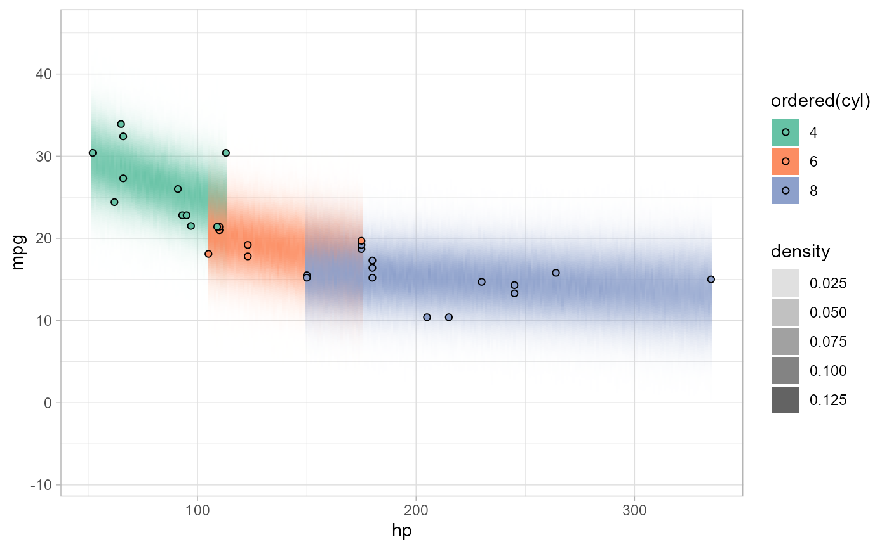

Generates a data frame of bins representing the kernel density (or
histogram) of a vector, suitable for use in generating predictive
distributions for visualization. These functions were originally
designed for use with the now-deprecated predict_curve(), and
may be deprecated in the future.
density_bins(x, n = 101, ...)
histogram_bins(x, n = 30, breaks = n, ...)A data frame representing bins and their densities with the following columns:
Bin midpoint
Lower endpoint of each bin
Upper endpoint of each bin
Density estimate of the bin
These functions are simple wrappers to density() and
hist() that compute density estimates and return their results
in a consistent format: a data frame of bins suitable for use with
the now-deprecated predict_curve().
density_bins computes a kernel density estimate using
density().
histogram_bins computes a density histogram using hist().
See add_predicted_draws() and stat_lineribbon() for a better approach. These
functions may be deprecated in the future.
# \dontrun{
library(ggplot2)
library(dplyr)
library(brms)
library(modelr)
theme_set(theme_light())
m_mpg = brm(mpg ~ hp * cyl, data = mtcars)
#> Compiling Stan program...
#> Start sampling
#>
#> SAMPLING FOR MODEL 'anon_model' NOW (CHAIN 1).
#> Chain 1:
#> Chain 1: Gradient evaluation took 5.8e-05 seconds
#> Chain 1: 1000 transitions using 10 leapfrog steps per transition would take 0.58 seconds.
#> Chain 1: Adjust your expectations accordingly!
#> Chain 1:
#> Chain 1:
#> Chain 1: Iteration: 1 / 2000 [ 0%] (Warmup)
#> Chain 1: Iteration: 200 / 2000 [ 10%] (Warmup)
#> Chain 1: Iteration: 400 / 2000 [ 20%] (Warmup)
#> Chain 1: Iteration: 600 / 2000 [ 30%] (Warmup)
#> Chain 1: Iteration: 800 / 2000 [ 40%] (Warmup)
#> Chain 1: Iteration: 1000 / 2000 [ 50%] (Warmup)
#> Chain 1: Iteration: 1001 / 2000 [ 50%] (Sampling)
#> Chain 1: Iteration: 1200 / 2000 [ 60%] (Sampling)
#> Chain 1: Iteration: 1400 / 2000 [ 70%] (Sampling)
#> Chain 1: Iteration: 1600 / 2000 [ 80%] (Sampling)
#> Chain 1: Iteration: 1800 / 2000 [ 90%] (Sampling)
#> Chain 1: Iteration: 2000 / 2000 [100%] (Sampling)
#> Chain 1:
#> Chain 1: Elapsed Time: 0.34 seconds (Warm-up)
#> Chain 1: 0.175 seconds (Sampling)
#> Chain 1: 0.515 seconds (Total)
#> Chain 1:
#>
#> SAMPLING FOR MODEL 'anon_model' NOW (CHAIN 2).
#> Chain 2:
#> Chain 2: Gradient evaluation took 6e-06 seconds
#> Chain 2: 1000 transitions using 10 leapfrog steps per transition would take 0.06 seconds.
#> Chain 2: Adjust your expectations accordingly!
#> Chain 2:
#> Chain 2:
#> Chain 2: Iteration: 1 / 2000 [ 0%] (Warmup)
#> Chain 2: Iteration: 200 / 2000 [ 10%] (Warmup)
#> Chain 2: Iteration: 400 / 2000 [ 20%] (Warmup)
#> Chain 2: Iteration: 600 / 2000 [ 30%] (Warmup)
#> Chain 2: Iteration: 800 / 2000 [ 40%] (Warmup)
#> Chain 2: Iteration: 1000 / 2000 [ 50%] (Warmup)
#> Chain 2: Iteration: 1001 / 2000 [ 50%] (Sampling)
#> Chain 2: Iteration: 1200 / 2000 [ 60%] (Sampling)
#> Chain 2: Iteration: 1400 / 2000 [ 70%] (Sampling)
#> Chain 2: Iteration: 1600 / 2000 [ 80%] (Sampling)
#> Chain 2: Iteration: 1800 / 2000 [ 90%] (Sampling)
#> Chain 2: Iteration: 2000 / 2000 [100%] (Sampling)
#> Chain 2:
#> Chain 2: Elapsed Time: 0.318 seconds (Warm-up)
#> Chain 2: 0.132 seconds (Sampling)
#> Chain 2: 0.45 seconds (Total)
#> Chain 2:
#>
#> SAMPLING FOR MODEL 'anon_model' NOW (CHAIN 3).
#> Chain 3:
#> Chain 3: Gradient evaluation took 7e-06 seconds
#> Chain 3: 1000 transitions using 10 leapfrog steps per transition would take 0.07 seconds.
#> Chain 3: Adjust your expectations accordingly!
#> Chain 3:
#> Chain 3:
#> Chain 3: Iteration: 1 / 2000 [ 0%] (Warmup)
#> Chain 3: Iteration: 200 / 2000 [ 10%] (Warmup)
#> Chain 3: Iteration: 400 / 2000 [ 20%] (Warmup)
#> Chain 3: Iteration: 600 / 2000 [ 30%] (Warmup)
#> Chain 3: Iteration: 800 / 2000 [ 40%] (Warmup)
#> Chain 3: Iteration: 1000 / 2000 [ 50%] (Warmup)
#> Chain 3: Iteration: 1001 / 2000 [ 50%] (Sampling)
#> Chain 3: Iteration: 1200 / 2000 [ 60%] (Sampling)
#> Chain 3: Iteration: 1400 / 2000 [ 70%] (Sampling)
#> Chain 3: Iteration: 1600 / 2000 [ 80%] (Sampling)
#> Chain 3: Iteration: 1800 / 2000 [ 90%] (Sampling)
#> Chain 3: Iteration: 2000 / 2000 [100%] (Sampling)
#> Chain 3:
#> Chain 3: Elapsed Time: 0.318 seconds (Warm-up)
#> Chain 3: 0.194 seconds (Sampling)
#> Chain 3: 0.512 seconds (Total)
#> Chain 3:
#>
#> SAMPLING FOR MODEL 'anon_model' NOW (CHAIN 4).
#> Chain 4:
#> Chain 4: Gradient evaluation took 6e-06 seconds
#> Chain 4: 1000 transitions using 10 leapfrog steps per transition would take 0.06 seconds.
#> Chain 4: Adjust your expectations accordingly!
#> Chain 4:
#> Chain 4:
#> Chain 4: Iteration: 1 / 2000 [ 0%] (Warmup)
#> Chain 4: Iteration: 200 / 2000 [ 10%] (Warmup)
#> Chain 4: Iteration: 400 / 2000 [ 20%] (Warmup)
#> Chain 4: Iteration: 600 / 2000 [ 30%] (Warmup)
#> Chain 4: Iteration: 800 / 2000 [ 40%] (Warmup)
#> Chain 4: Iteration: 1000 / 2000 [ 50%] (Warmup)
#> Chain 4: Iteration: 1001 / 2000 [ 50%] (Sampling)
#> Chain 4: Iteration: 1200 / 2000 [ 60%] (Sampling)
#> Chain 4: Iteration: 1400 / 2000 [ 70%] (Sampling)
#> Chain 4: Iteration: 1600 / 2000 [ 80%] (Sampling)
#> Chain 4: Iteration: 1800 / 2000 [ 90%] (Sampling)
#> Chain 4: Iteration: 2000 / 2000 [100%] (Sampling)
#> Chain 4:
#> Chain 4: Elapsed Time: 0.257 seconds (Warm-up)
#> Chain 4: 0.139 seconds (Sampling)
#> Chain 4: 0.396 seconds (Total)
#> Chain 4:
step = 1
mtcars %>%
group_by(cyl) %>%
data_grid(hp = seq_range(hp, by = step)) %>%
add_predicted_draws(m_mpg) %>%
summarise(density_bins(.prediction), .groups = "drop") %>%
ggplot() +
geom_rect(aes(
xmin = hp - step/2, ymin = lower, ymax = upper, xmax = hp + step/2,
fill = ordered(cyl), alpha = density
)) +
geom_point(aes(x = hp, y = mpg, fill = ordered(cyl)), shape = 21, data = mtcars) +
scale_alpha_continuous(range = c(0, 1)) +
scale_fill_brewer(palette = "Set2")
#> Warning: Returning more (or less) than 1 row per `summarise()` group was deprecated in
#> dplyr 1.1.0.
#> ℹ Please use `reframe()` instead.
#> ℹ When switching from `summarise()` to `reframe()`, remember that `reframe()`
#> always returns an ungrouped data frame and adjust accordingly.

# }